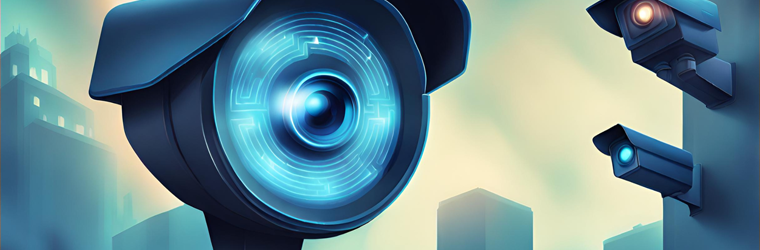

Surveillance Technology
Purpose and Features of Surveillance Technology
Surveillance technology is used to observe the communication of individuals through their digital and physical activities. This is employed through various forms of digital devices, softwares or systems collecting information which can be interpreted and utilised for a greater cause.
There are many components of surveillance technology which are intertwined with each other to provide many benefits such as improved productivity, increased convenience and the most significant being the enhancement of security and safety. Surveillance technology plays a major role in the deterrence of crime as it acts as a source of evidence, aiding to track and capture criminals.

The main components include:
- Closed-Circuit Television (CCTV): CCTV systems are the most common form of Surveillance technology. They use cameras to collect video footage which can be monitored live or stored to be reviewed afterwards. It contains many features such as night vision, high-definition resolution and can be accessed remotely allowing security to view multiple areas at the same time.
- Access Control Systems: This system modulates which individuals can have access to a restricted area. It consists of a hardware component which includes the physical parts such as key cards, readers, biometric scanners etc. The software component includes enabling authorised individuals to gain entry by managing the system remotely.
- Facial Recognition Software: This software is used to observe individuals for the possibility of security threats. This is done by scanning different faces which are then compared with a major database of known identities. This system is extremely useful in the capture of criminals.
- Alarm Systems: Alarm systems encompass fire alarms, burglar alarms, and panic alarms. Security guards can promptly receive real-time notifications in the event of an alarm, allowing them to respond swiftly to emergencies.
- Intrusion Detection Systems: These systems allow to detect unauthorised movement in a restricted environment. This is done through the use of sensors, alarms and control panels. The control panel triggers an alarm if movement or sound is detected from the sensors in the area.
These are forms of physical, electronic and biometric surveillance. It also exists in the form of computer, social media and financial surveillance technology. These forms of online surveillance are mainly used to find criminal activity since it contains much more confidential information. Thus, there is a legal process to undertake investigations involving the following types of surveillance.
- Computer Surveillance: This form of surveillance includes monitoring an individual’s computer operations. This could include interpreting their emails, computer history, activation of webcams and microphones and other online activities. Many workplaces and schools can also track computer activity if the device is connected to the network.
- Social Media Surveillance: This type of surveillance allows people to collect personal information on an individual, proving the lack of privacy on social media platforms. It is useful in gaining knowledge about their interests, contacts and activities.
- Financial Surveillance: Financial surveillance involves monitoring and analysing financial activities to prevent crimes and illicit financial practices like money laundering and fraud. It plays a vital role in maintaining the ethics of financial systems.
These surveillance forms are used widely around the world. For example it can be used in healthcare and education institutions, urban malls and retail stores, corporate workplaces, public areas and many more.
Legal and Ethical Issues
Although surveillance technologies are extremely useful for various reasons, they can result in many issues not only towards individuals but also towards society as a whole. The most significant issue with public surveillance technologies is that they pose a threat to our privacy.
Surveillance legal issues - the fine line between your security and privacy.
Legal Issues and Effects
The collection and access to individual’s data by government surveillance systems is against individuals' right to privacy, thus the exploitation of this basic human right is a legal and ethical issue. As of 2020, there are 60,000 CCTV cameras in Sydney alone thus, proving all individuals have an expectation of a level of privacy. This may be invaded due to surveillance technologies, such as CCTV cameras, facial recognition technologies, biometric scanning systems, in locations where a high degree of privacy is entitled. The Surveillance Devices Act, 2007 prohibits the recording of private, audio conversations without the consent of all parties. This law highlights the importance of consent since it proves the importance of individuals being aware of the risks involved. It is a right for individuals to not be pressured into a situation against their will which can be a consequence of such situations. Online surveillance is another aspect in which privacy can be invaded. Monitoring people's online actions, conversations, and personal information without their knowledge or agreement is a common practice in computer surveillance. This can involve reading emails, keeping track of search history, and gaining access to other private data. The reasonable expectation of privacy that people have is susceptible to privacy invasion by this type of surveillance. This expectation is safeguarded by a number of legal frameworks, including legislations, constitutional requirements, and global standards regarding human rights. According to the Australian Cyber Security Center ACSC, 164 cybercrime reports are made by Australia every day on average which is about 1 report every 10 minutes.
Ethical Issues and Effects
The infringement of privacy is also a major ethical issue in current society. Privacy refers to the ability of an individual or group to seclude themselves or information about themselves, from certain groups or individuals thus proving that it is a form of security and freedom everyone has. These rights are further emphasised in ‘The Privacy and Personal Information Protection Act; 1998.’ Invasion of privacy is a quick-rising issue in modern-day society and has major ethical issues. This is because invading privacy is a breach of trust that an individual has upholded into their form of security network and thus breaching that privacy is a break of that trust that potentially leads to severe consequences such as bankruptcy and homelessness in certain conditions. Moreover, surveillance technology has increased the breach of privacy. These technologies include personal surveillance cameras in public places, facial recognition systems and surveillance by government authorities. This is unethical as it infringes the society’s consent since this surveillance can lead to the leak of personal information making this a social and ethical issue. This can result in the possibility of illegal behaviour such as bribery, or potential leak of information to the public without owners’ consent. Professor Biddle from ANU Centre stated that “Roughly one-third of adult Australians, or around 6.4 million people, have been the victim of a breach in the last 12 months,” and another statistic from ANU research stated that out of a survey from 3500 adults in 2022, 32.5% of them were experienced with some form of breach against their personal data. Thus, surveillance has constantly increased the breach of privacy which is regarded as a highly unethical issue that is rising exponentially with investments in new technology in the following years.
Justification Strategies for Surveillance Technology
Several strategies can be employed to reduce the ethical issue of surveillance within society. The first strategy includes transparency and accountability. This means that all surveillance actions taken place clearly outlines the guidelines regarding the use of surveillance technology in that specified location. This ensures a sense of trust and order within society as it makes the community more aware of the situation. The second strategy includes creating legal frameworks. This means creating laws and certain regulations that create a boundary of rights regarding the use of surveillance. For example, ‘The Privacy and Personal Information Protection Act; 1998’ and ‘The Surveillance Devices Act, 2007’ act as laws within Australia’s Constitution that protect the community from any form of unethical behaviour such as the breach of privacy without any form of consent. This can protect people from cybercrime attacks and make them safer from illegal use of their personal information. The third strategy includes outlining the necessity. This means that there should be a clear reason for the necessity of placing surveillance cameras within a certain area. This could be done by submitting a document of reasoning to the council or local courts for approval. The fourth and final strategy includes educating the public regarding certain perimeters of surveillance technology, such as the laws around it, ethical issues and the importance of personal consent. This could be done by certain organisations teaching about this issue in schools, workplaces or even elderly centres to ensure safety for the whole community and the idea of the potential damage this has. Therefore, these strategies could be implemented to assist society in understanding the damage of surveillance technology and how to protect themselves from this to maintain a private life.
Strategies for improvement - optimising surveillance tech
Overall, surveillance technology is proven to be extremely useful in situations as they provide a sense of safety and security. However this can have a negative impact on individual human rights to privacy posing ethical and legal issues regarding individual and society entitlement.
References
National Security Information Act. (n.d.). Attorney-General's Department. Retrieved March 25, 2024, from https://www.ag.gov.au/national-security/national-security-information-act
Privacy and reputation. (n.d.). Attorney-General's Department. Retrieved March 25, 2024, from https://www.ag.gov.au/rights-and-protections/human-rights-and-anti-discrimination/human-rights-scrutiny/public-sector-guidance-sheets/privacy-and-reputation
Six million Australian adults hacked in the last year | Australian National University. (2022, November 8). The Australian National University. Retrieved March 25, 2024, from https://www.anu.edu.au/news/all-news/six-million-australian-adults-hacked-in-the-last-year
6 Types of Surveillance for Investigations Explained - NITA. (2023, April 25). National Investigative Training Academy. Retrieved March 25, 2024, from https://investigativeacademy.com/6-types-of-surveillance-for-investigations-explained/
Surveillance Ethics. (n.d.). Internet Encyclopedia of Philosophy. Retrieved March 25, 2024, from https://iep.utm.edu/surv-eth/
Surveillance technology. (n.d.). Thoughtworks. Retrieved March 25, 2024, from https://www.thoughtworks.com/en-au/insights/decoder/s/surveillance-technology
Surveillance Technology's Impact on Privacy. (n.d.). The INC Magazine. Retrieved March 25, 2024, fromhttps://theincmagazine.com/surveillance-technologys-impact-on-privacy/